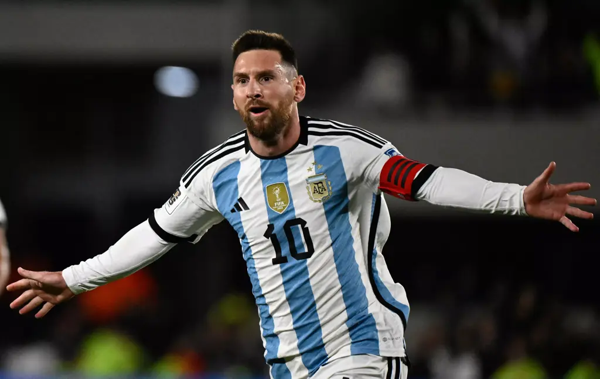
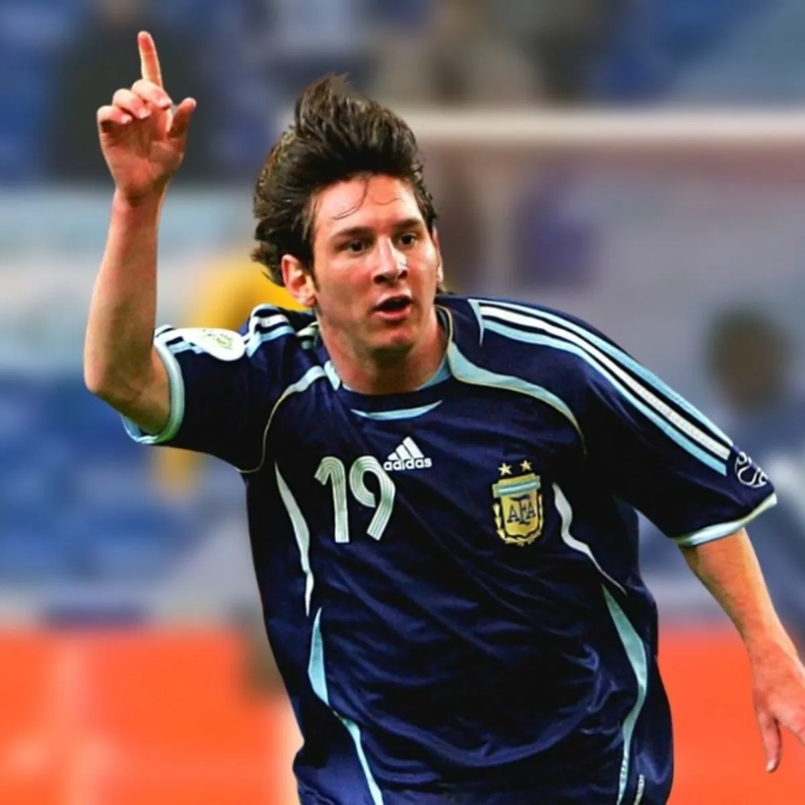

La Pulga, con 31 goles en 63 apariciones, es el máximo goleador
histórico de las eliminatorias sudamericanas para la Copa Mundial de la
FIFA™. Le robó el récord a su excompañero del Barcelona Luis Suárez, quien
tiene 29 goles en 62 encuentros. Messi ahora está persiguiendo a la leyenda
guatemalteca Carlos Ruiz, quien anotó 39 goles, un récord en todas las regiones.
Joaquin Botero, Alexis Sanchez y Messi comparten el récord de Sudamérica en goles en partidos
consecutivos, con cinco.
Messi ha acertado en 13 estadios diferentes en las eliminatorias sudamericanas para la
Copa del Mundo. Neymar y Luis Saurez son los siguientes con 12 y 11 cada uno. Messi
aumentará su cuenta si marca contra Brasil en el Maracaná en la sexta jornada.
Messi ha marcado 106 goles internacionales, 27 más que el segundo mayor sudamericano,
Neymar. Sólo Ali Daei (109) y Cristiano Ronaldo (127) tienen más festejos internacionales.

En el debut de Messi en la Copa del Mundo, con 18 años y 358 días contra Serbia y Montenegro en
2006, asistió a un gol de Hernán Crespo apenas tres minutos después de comenzar y encontró la red
él mismo 10 minutos después. Esto lo convierte en el sexto goleador más joven en la historia de la
competición detrás de Dimitri Sychev, Nicolae Kovacs, Michael Owen, Manuel Rosas y Pelé.
Messi es uno de los seis únicos hombres que han jugado cinco Mundiales junto a Antonio Carbajal,
Lothar Matthaus, Rafa Márquez, Andrés Guardado y Cristiano Ronaldo. En caso de estar en México,
Estados Unidos y Canadá 2026, romperá otro récord.
Messi es el único jugador que marcó en un Mundial cuando era adolescente, en sus 20 y 30 años.
Pelé no pudo lograr lo mismo por solo cuatro meses.
Messi es el único jugador que ha registrado una asistencia en cinco Mundiales diferentes.
Sus rivales más cercanos son Pelé, Grzegorz Lato, Diego Maradona y David Beckham,
dieron pases gol en tres ediciones cada uno.
Pelé y Messi comparten el récord de más asistencias en la fase eliminatoria: seis. Messi
disputó su 26ª aparición en el Mundial en la final de Qatar 2022, batiendo el récord de Lothar Matthaus

Messi ha disputado un récord de 19 apariciones como capitán en la Copa del Mundo.
Le siguen Rafa Márquez (17) y Diego Maradona (16).
Sólo cinco hombres han capitaneado un equipo en dos finales de la Copa del
Mundo: Karl-Heinz Rummenigge, Diego Maradona, Dunga, Hugo Lloris y Messi.
Messi marcó su primer y último gol en el Mundial con 16 años y 184 días de diferencia.
El siguiente mayor lapso en la historia de los Mundiales pertenece a Cristiano Ronaldo
con 16 años y 160 días.
Messi ha jugado más minutos en la historia de los Mundiales: 2.314. Rompió el récord
de Paolo Maldini de 2.217 minutos en la final de Qatar 2022.
Messi es el máximo goleador de Argentina en el Mundial con 13 goles. Le siguen Gabriel
Batistuta (10), Diego Maradona (8), Guillermo Stabile (8), Mario Kempes (6) y Gonzalo Higuaín (5).
El premio al Jugador del Partido, otorgado por primera vez en el Mundial de 2002, ha sido otorgado
a Messi en 11 ocasiones. Sus cuatro en Brasil 2014 son un récord para una edición que comparte con
Wesley Sneijder, quien recibió lo mismo en Sudáfrica 2010.
Messi tiene el récord de marcar más goles en un año calendario para Argentina gracias a anotar 18 en
14 apariciones en 2022. El siguiente máximo es 12, registrado por Messi en nueve partidos en 2012 y
Gabriel Batistuta en 12 en 1998.